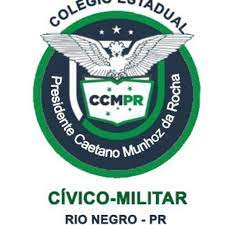

- Selton Ribeiro
- Colégio Caetano Munhoz da Rocha

A escola Civico Militar Presidente Caetano Munhoz da Rocha é uma escola do municipio de Rio Negro , é uma das mais tradicionais da cidade , e um colegio civico militar , com turmas do 6 ao 3 ano do ensino medio.Localizado na rua Saturno Olindo.
